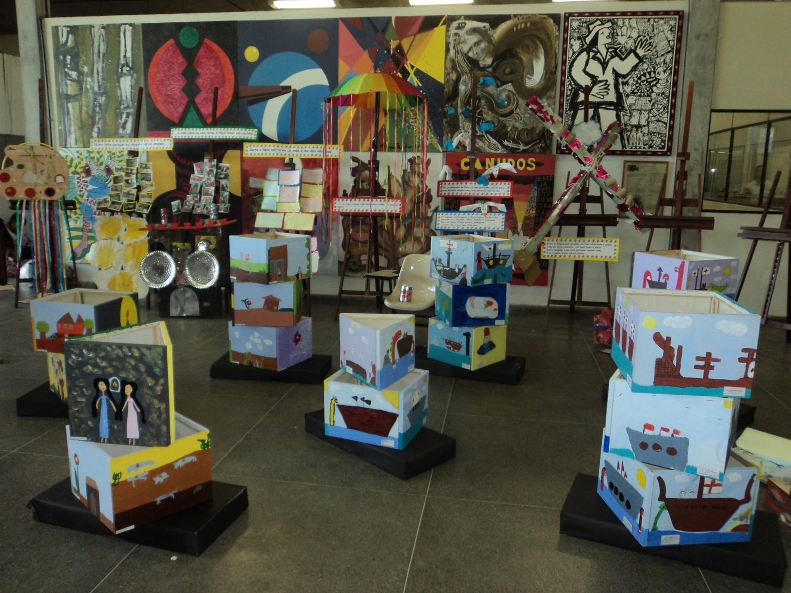

Arte nas Escolas
A iniciativa Arte nas Escolas é um convite à imaginação, à expressão e à descoberta. Colaborando com escolas, artistas locais e oficinas de arte, buscamos enriquecer a jornada educacional dos alunos e fortalecer sua autoestima.
Objetivos do Projeto:
1. Integração com a Comunidade Artística Local: Estabelecer parcerias com artistas locais, galerias e ateliês. Convidar esses artistas para compartilhar suas experiências e técnicas com os alunos.
2. Oficinas de Arte Inspiradoras: Realizar oficinas práticas de pintura, escultura, fotografia, dança, teatro e música. Permitir que os alunos explorem diferentes formas de expressão criativa.
3. Desenvolvimento da Autoestima e Imaginação: A expressão criativa é uma ferramenta poderosa para fortalecer a autoestima. Ao criar, os alunos descobrem sua voz única e ganham confiança em suas habilidades.
4. Enriquecimento do Currículo Escolar: A arte não é apenas uma disciplina isolada; ela permeia todas as áreas do conhecimento. Integrar a arte ao currículo torna o aprendizado mais significativo e inspirador.
Se você deseja fazer parte desse projeto incrível, pode:
Participar: Alunos podem se inscrever nas oficinas de arte e explorar sua criatividade. Professores podem incorporar projetos artísticos em suas aulas regulares.
Ser Voluntário: Artistas locais podem oferecer seu tempo e conhecimento. Voluntários podem ajudar a organizar eventos e facilitar as oficinas.
No projeto "Arte nas Escolas", cada traço é uma jornada. Junte-se a nós para pintar sonhos, esculpir ideias e dançar com a imaginação.